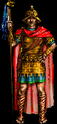

|

|
The son of Priestess Qerti’nya and General Cylill, young Cort has been appointed the Watcher of the Glorious Arena of Kraanan. A calm smile graces his face as he oversees the mock combats held in the name of Kraanan the Fist.
|
Sells/Teaches
|
Buys
|
|
Nothing
|
Nothing
|
|
Info & Tips
|
- Location: The Arena of Kraanan
- Favor/Quest/Courier: No
- Arena Rules:
- Between bouts, any person may say the name of a combat style to change combat styles. However, all matches must be over, and any current champions must RENEGE their titles.
- Magic and combat is limited to only between combatants. Players in the stands will not be harmed by wayward combatants.
- The Watcher reserves the right to make the proceedings more... interesting... if he so desires.
- Matches are 'to the death'. However, combatants suffer no ill effects from arena death.
- Traditional: Traditional bouts are those between only two combatants, a champion and a challenger. If there is no champion, say CHAMPION to claim the title. A potential fighter then says CHALLENGE to challenge the champion. The champion may then choose to either ACCEPT the challenge, or RENEGE his title.
- Last Man Standing: Last man standing bouts may have up to 25 combatants. First, a CHAMPION must be declared. Once someone CHALLENGES him, others have 30 seconds to also CHALLENGE. After the Watcher has begun the match, it's every man for himself. The last gladiator left in the ring wins the glory of Kraanan.
- Guild Vs Guild: Two guilds may choose to combat each other. A representative from one guild registers that guild as the CHAMPION, and then a member of the challenging guild proffers a CHALLENGE. At this point, other guild members from both guilds have 30 seconds to join in, although no more than 10 people from any one guild may join in.
- Battle Royale: A mix between last man standing and guild vs guild, first a CHAMPION is needed, and then other guild members from other guilds may CHALLENGE. Any number of guilds may take part in the proceedings, but there may be no more than 5 members of any one guild in the pit, and no more than 25 combatants total.
|
|